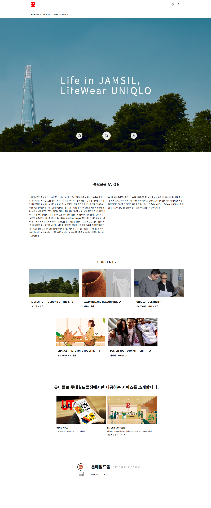
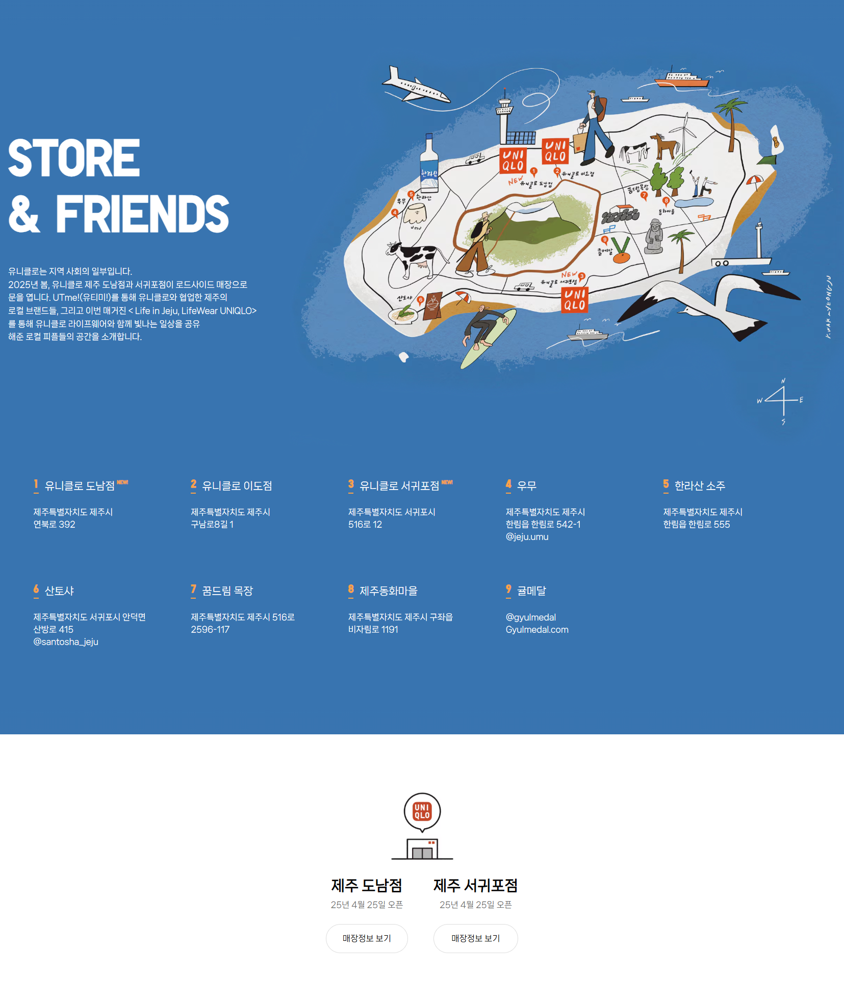
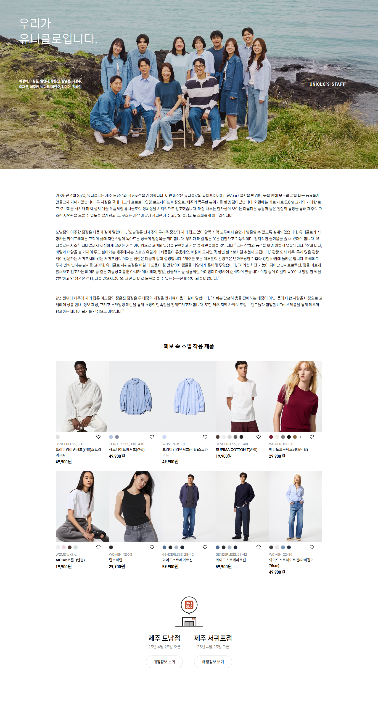
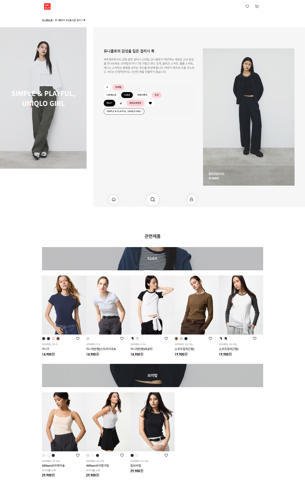
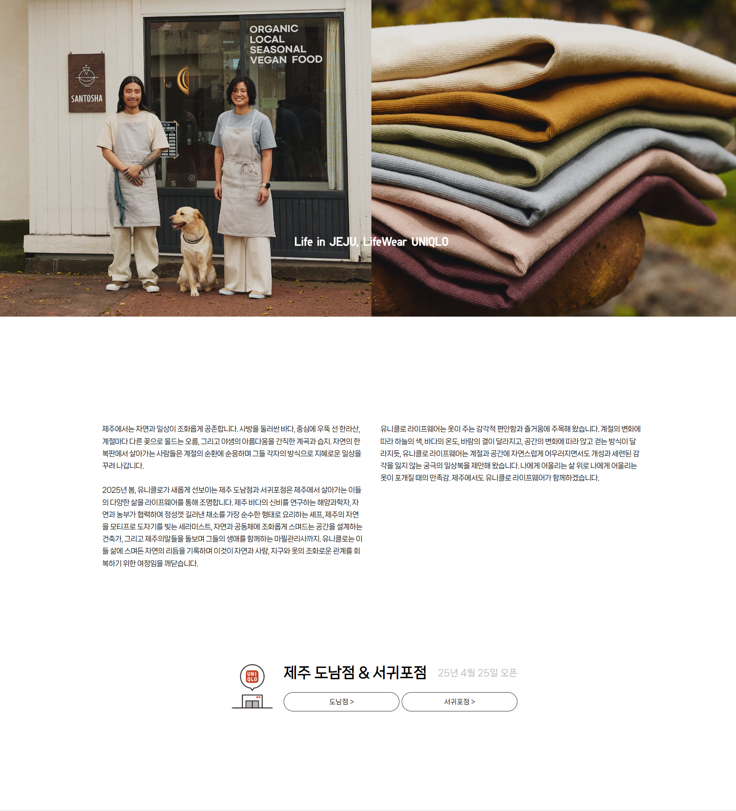

TITLE
UNIQLO
UNIQLO
Web Feature
- YEAR
- 08 2024
- DURATION
-
- 5 month of production
- FIELDS
-
- TEAM PROJECT
- PUBLISHING
- MARKUP
- CMS
- VS
- HOW I WORKED ON IT
-
유니클로 공식 온라인스토어 콘텐츠 중 유니클로의 월별 특집 사이트 디자인 및 퍼블리싱을 담당했습니다. 심플한 톤앤매너 속에서도 매 특집마다 새로운 컨셉과 디자인을 시도한 프로젝트입니다.
#OVERVIEW
유저의 편의와 접근성을 고려하여 모바일 페이지에 중점을 두었고
화보와 제품컷을 조화롭게 배치하여 이용자가 자연스럽게 제품에 관심을 갖고, 월별 리플렛 내용이 자연스럽게 연결될 수 있도록 하였습니다.
유니클로만의 심플한 톤앤매너를 맞추면서 여러 컨셉과 표현 방법을 통해 다양한 디자인을 선보였던 프로젝트입니다.
MADE FOR ALL, UNIQLO
‘모두를 위한 옷’임을 알리는 특별한 경험
#WORK_FLOW
유니클로 월별 리플렛 프로젝트는 매월 다른 기획 의도와 제품 구성을 바탕으로 새롭게 디자인된 리플렛 페이지를 1인이 디자인부터 퍼블리싱하는 형태로 진행되었습니다.
페이지별로 상품의 착용 상세샷을 더 효율적으로 보여주기 위한 페이지 디자인 제안, 요구되는 인터랙션이 모두 달랐기 때문에 고객사와 계속 소통하며 스크롤 트리거·스티키·lazy-load 등 다양한 기능을 한정된 기간 내에 구현하면서도 안정성을 유지하는 것이 가장 큰 과제였습니다.
내부 협업 주체
디자인 제안
인터랙션
유지보수
UNIQLO
사용자의 관심이 실제 구매로 이어지도록 유도
#SITE_PREVIEW
-

-

-

-

-

-

-
